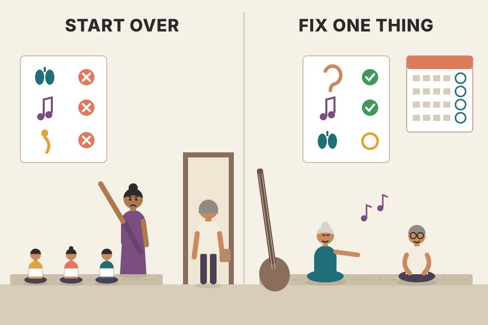
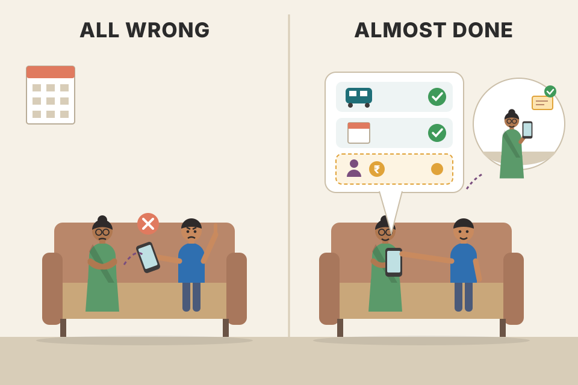
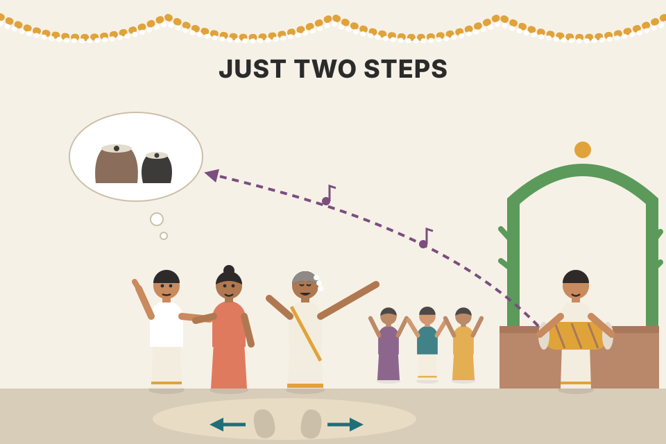
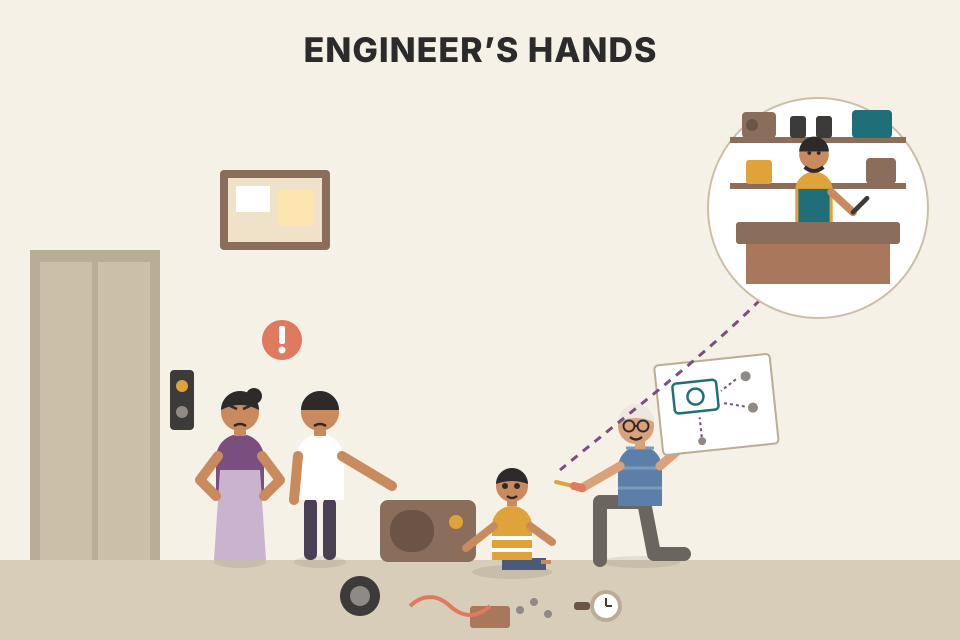
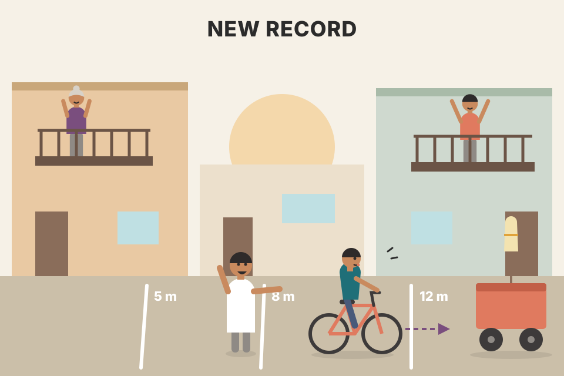
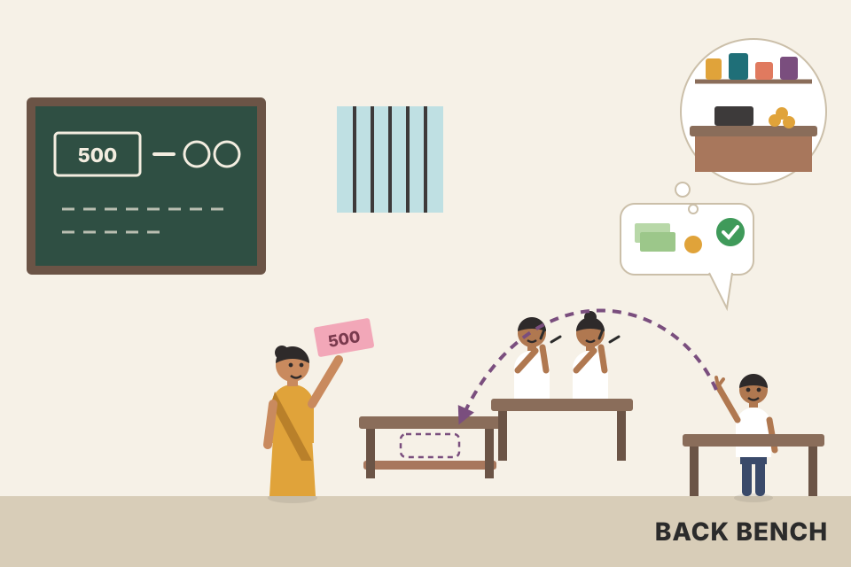
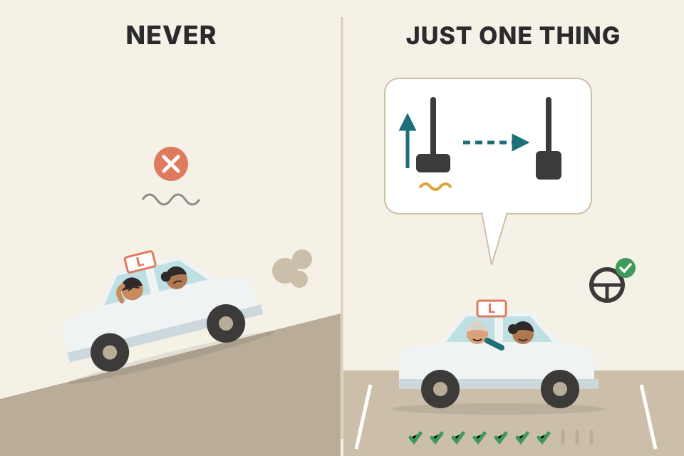

DALE CARNEGIE · HOW TO WIN FRIENDS · PART FOUR · CHAPTER 8 · PDF p230–233
Make the Fault Seem Easy to Correct
Tell someone they are hopeless at a thing and they stop trying. Tell them it is a small fix and that they have a knack for it, and they will practise until they get it.
This is one of the shortest chapters in the book: four pages, four stories. A middle-aged man quits one dance teacher who told him to start over and blossoms under another who called his basics sound. Lowell Thomas gets a nervous Carnegie to a bridge table by telling him the game is only memory and judgment, things he already writes about. Ely Culbertson, a failure at three jobs, becomes the world's best-known bridge author because the woman he married told him he had a gift for it. And a fifteen-year-old written off as "brain-injured" goes from counting on his fingers to the honour roll after his father turns arithmetic into a nightly game with a stopwatch and a celebration for every small gain. The lesson is the same each time: the size of the fault matters less than how big it is made to look.
Principle 8 of Part Four
Use encouragement. Make the fault seem easy to correct.
How the chapter fits together
pdf p230–233 · read this first
Where it sits. This is the eighth of the nine chapters in Part Four, "Be a Leader: How to Change People Without Giving Offense or Arousing Resentment". Part Four is the book's manual for correcting people: begin with praise (Ch.22), point to mistakes indirectly (Ch.23), admit your own first (Ch.24), ask rather than order (Ch.25), let them save face (Ch.26), praise every improvement (Ch.27) and give them a fine reputation to live up to (Ch.28). This chapter adds the last piece about the fault itself: shrink it. The final chapter of the Part, Ch.30, is about making people glad to do what you ask.
The argument as a chain. Each row builds on the one before.
Problemwe point out how wrong someone is→they lose heart and quit
First proofteacher 1: "start all over"vsteacher 2: "basics are fine, a few new steps"→he stays and improves
Claim"you're no good at it" kills effort→encourage · make it easy · show faith in a hidden flair
StoriesLowell Thomas and the bridge tableCulbertson and Josephine Dillon
Big caseDavid: flash cards, a stopwatch, a jig for every gain→honour roll; "learning is easy"
PrincipleUse encouragement. Make the fault seem easy to correct.
Limitsencouragement must point at something real→and "easy" must be made true with small steps
The same fault can be described as a mountain or as a step. Carnegie's claim is that the description, more than the fault, decides whether the person tries.
01 · THE OPENING STORY
Two dance teachers: one said "start over", the other said "a few new steps"
pdf p230
Carnegie opens with a small, slightly comic story told to him by a friend. It shows the whole principle in one before-and-after.
a friend of Carnegie's, about 40newly engageddancing as he had 20 years earliertwo teachers
Teacher one
Teacher two
Verdict
Everything wrong; unlearn it all and begin from zero.
Style dated, foundations sound; only a few new steps to add.
What she stressed
His mistakes.
What he already did well; errors played down; "natural rhythm".
Accurate?
Probably, he admits.
Possibly not, he admits.
Result
He lost heart and left.
He stayed, hoped, and danced better.
The setup. Carnegie's friend, around forty and newly engaged, signed up for dance lessons at his fiancée's urging; his steps were twenty years stale. He tried two teachers in turn.
His own verdict. He still rates himself a poor dancer, yet he is certain the second teacher's confidence in him is why he improved: it gave him hope and a reason to keep going.
"That took the heart out of me."Carnegie's friend, on the first teacher (pdf p230)
The point Carnegie draws: the first teacher was more accurate, the second was more useful. The first made the fault total, so the distance to good dancing looked impossible. The second made it small, so the distance looked like something he could walk.
Dated wording. The book calls him "a bachelor friend" and frames the lessons around his fiancée's wish. Today the same story works for anyone of any age taking up an old skill again: a parent relearning swimming, a manager going back to writing code.
Picture it

Two music teachers in the same Chennai colony. A 45-year-old who sang as a child walks into the first one's class; after one song she says his breathing, pitch and posture are all wrong and he must start from the very first lesson with the eight-year-olds. He never returns. The second teacher listens and says, "Your sruti is good, your ear is there. We only need to fix the breathing." He comes every Sunday for a year.
Where it breaks: sometimes the first teacher is right that the old habit has to be fully unlearned (a bad grip in tennis, a wrong posture that injures). Then "a few new steps" would be a lie. The lesson is not to hide the work, but to start from what is already sound and make each piece feel doable.
What's happening behind it
The book's explanation: the first teacher, by stressing his mistakes, discouraged him; the second, by stressing what he did right and shrinking his errors, gave him hope, and hope is what made him want to improve. Effort follows the belief that improvement is possible.
Beyond the book: psychologist Albert Bandura called this belief self-efficacy (1977): your confidence that you can do a specific thing. People with low self-efficacy for a task avoid it or give up early; people with higher self-efficacy try harder and persist longer. Bandura listed "verbal persuasion" (someone credible telling you that you can do it) as one of its sources, which is exactly what the second teacher supplied. He also found that persuasion alone is a weaker, shorter-lived source, and that real small successes are the strongest; the David story later in this chapter adds those.
At work
A mid-level engineer moving from Java to Go opens their first PR. A reviewer who writes "This isn't idiomatic Go at all. You'll need to rethink how you structure everything" is teacher one. A reviewer who writes "The logic and the tests are solid. Two Go habits will make this feel native: return errors instead of panicking, and keep interfaces small. Both are quick to pick up" is teacher two. Both may want the same final code; only the second keeps the author eager to write the next PR.
Interview angle. "Tell me about a time you mentored someone who was struggling." A strong answer shows you first found what they already did well, described the gap as a short list of learnable things, and watched them gain speed. "I told them everything had to change" is the teacher-one story, even if it is true.
Calling him "a natural-born dancer" is also a reputation to live up to: Part Four, Ch.7.
02 · THE CLAIM
What kills the wish to improve, and the three moves that feed it
pdf p230
From the dance story Carnegie draws a general rule, and he applies it to the three groups he usually names: your child, your spouse, your employee.
What destroys the incentive
Labels that make the gap permanent: "you're hopeless at this", "it's just not in you", "you've got it all backwards". Once a person hears that, Carnegie argues, nearly all motive to improve is gone.
What builds it
The reverse approach, below. Use it and, he claims, people will put in hours of practice of their own accord.
The opposite technique, as Carnegie lists it:
1 · Be liberal with encouragement
Not one grudging "good job", but plenty of it, especially for what is already right.
2 · Make the thing seem easy to do
Describe the fault as small and the fix as within reach.
3 · Show faith in their ability
Let them know you believe they can do it, that they have an undeveloped flair for it: the talent is there, it just has not been used yet.
"He will practice until the dawn comes in the window."Carnegie, on what encouragement can do (pdf p230)
Notice the word "undeveloped". It is the clever part. It does not claim the person is already good (which they would not believe). It claims the ability exists and is waiting to be grown, which makes the gap feel like something that belongs to them and can close.
Dated wording. The book writes the rule with "he" and "his" for the person being helped, and its trio is "child, spouse, employee". Read it as "anyone you want to help improve": a teammate, a student, a parent learning to use UPI.
Picture it

Teaching your mother to book train tickets on the IRCTC app. Say "No, no, you're doing it all wrong, you don't understand phones" and the phone goes back to you for good. Say "You already found the train and the date, that was the hard part. Now it's just the passenger details and pay, you'll have it in a minute" and next month she books her own Tatkal ticket.
Where it breaks: the app really is easy once learned, so "easy" was true. If the task is genuinely hard (filing a complicated tax return), calling it easy sets the person up for a nasty surprise. Then shrink it by breaking it into steps, not by pretending.
What's happening behind it
The book's explanation: people try when they believe effort will pay off. Labels like "stupid" or "no gift" tell them effort is pointless; encouragement and an "it's easy" frame tell them effort is worth it.
Beyond the book: Carol Dweck's research on mindsets fits half of this and complicates the other half. Calling a fault a fixed lack ("you have no gift") pushes people toward a fixed view of ability and toward giving up after setbacks, as Carnegie says. But her studies with Claudia Mueller (1998) found that praising children for being "smart" (an ability) made them avoid hard tasks afterwards, while praising their effort and strategy made them persist. So "you're a natural" works best paired with "and look how fast the practice is paying off". Carnegie's own David story (plate 5) praises the progress, not the talent.
Self-audit: when I last corrected someone…
Think of the last time you pointed out a fault to someone (at work or at home). Tick what you did.
At work
The "no gift for it" label hides in everyday team talk: "she's just not a frontend person", "he'll never be good at estimates", "our juniors can't write SQL". Each one is teacher one's verdict, and people sense it even when it is said behind their backs. Swapping it for "she hasn't done much frontend yet; the component patterns will click in a sprint or two" changes what you assign her, how you review her, and how hard she tries.
Why "you are stupid at this" stings so much: the need to feel important, Part One, Ch.2.
03 · CARNEGIE AS THE BEGINNER
Lowell Thomas gets a terrified Carnegie to the bridge table
pdf p231
Carnegie now puts himself in the learner's seat. The person using the technique is Lowell Thomas, the broadcaster and travel writer whom Carnegie calls a superb artist in human relations, someone who gave people confidence, courage and faith in themselves. (Thomas also wrote the portrait of Carnegie at the end of the book: "A Shortcut to Distinction".)
a weekend at the Thomases'Saturday night, by the firea friendly game of bridgeCarnegie: never played
The outcome first. That same evening Carnegie, who had never played, was sitting in on a hand of bridge.
How it happened. On a weekend visit to the Thomases, he was asked to make up a friendly game and refused outright: to him the game was a total mystery. Thomas did not argue with the fear. He redefined the game as two abilities, remembering and judging, and pointed out that Carnegie had published pieces on memory. So the game suddenly looked like home ground, and Carnegie found himself dealt in before he had time to object.
"There is nothing to bridge except memory and judgment."Lowell Thomas, as Carnegie recalls it (pdf p231)
The two moves Thomas made, in Carnegie's words: he told Carnegie he had a natural flair for it, and he made the game seem easy. Notice how he did the second: he did not say "bridge is easy" in general, he shrank it into two skills and then linked one of them to something Carnegie was already known for. The fear ("a black mystery") was replaced by a familiar shape ("memory, which you write about").
Picture it

At a family wedding in Kerala, your cousin drags you to the dance floor and you protest that you can't dance. Your aunt says, "Arre, it's only two steps, left and right, and you play the tabla, so you already have the beat. Just follow the drum." A minute later you are in the circle.
Where it breaks: a wedding dance has almost no cost of failure; everyone is laughing anyway. At a serious bridge club or a real performance, "it's just two things" might get someone in over their head. Thomas's version worked partly because the game was friendly and the stakes were low.
What's happening behind it
The book's explanation: Carnegie went to the table "all because" he was told he had a flair for it and the game was made to seem easy. Fear of the unknown was the only thing stopping him; Thomas removed it.
Beyond the book: two things are going on. First, chunking: a vague, scary whole ("bridge") becomes two named parts ("memory and judgment"), and a task you can name feels smaller than one you can't. Second, Thomas linked the new task to Carnegie's existing identity ("you write about memory"). People are more willing to try things that fit how they already see themselves, which is the same lever as the "fine reputation" in Ch.28.
At work
You want a backend engineer to take the first on-call shift for a new service, and they say "I don't know Kubernetes, I'll break something." Teacher one: "You'll need to learn K8s properly first." Lowell Thomas: "On-call here is mostly two things: reading the dashboards and following the runbook. You already write our best runbooks. The first week you'll shadow me." Same job, but now it is two familiar skills plus a safety net.
Interview angle. "Tell me about a time you got someone to take on something outside their comfort zone." Describe how you named the small number of skills it really needed, linked one to a strength they already had, and lowered the stakes for the first try.
Ely Culbertson: a failure at three jobs, until someone saw a flair
pdf p231
Bridge reminds Carnegie of Ely Culbertson, the most famous bridge writer of his day: his books were translated into about a dozen languages and sold over a million copies. Culbertson told Carnegie he would never have made bridge his profession if a young woman had not convinced him he had a talent for it.
arrives in America, 1922fails: teaching philosophy and sociologyfails: selling coalfails: selling coffeemeets Josephine Dillon
Before. When Culbertson came to America in 1922 he tried to get work teaching philosophy and sociology, and could not. He tried selling coal and failed; he tried selling coffee and failed again. He played some bridge, but teaching it had never crossed his mind. And he was a poor player who was also very stubborn: he asked so many questions and ran so many long after-the-game analyses of each hand that nobody wanted to play with him.
The turn. He met a bridge teacher, Josephine Dillon, fell in love and married her. She noticed how carefully he analysed his cards and convinced him that he was a potential genius at the game.
After. Culbertson told Carnegie it was that encouragement, and that alone, which led him to make bridge his career.
Look at what she encouraged. The habit everyone else found unbearable (endless questions and post-mortems) and the habit she praised (careful analysis of the cards) were the same behaviour. She did not invent a talent; she pointed at a real trait, gave it a better name, and showed him where it could lead. That is the difference between this chapter's encouragement and empty flattery, which Carnegie rejects in Ch.2.
Try it: find the flair inside the fault
Each card shows a habit that annoys people. Tap to see the strength hidden inside it, the way Josephine Dillon saw it in Culbertson.
Open all four, then look at the pattern.
Dated wording. The book introduces her as "a pretty bridge teacher", describing her looks before her skill. Today we would simply say she was a bridge teacher, and a good one: she was the one who could recognise a gift for the game.
Picture it

A boy in a Pune housing society keeps taking apart the society's old radio, the lift buttons, his father's watch, and everyone calls him a nuisance. A retired engineer on the third floor says, "This boy has an engineer's hands. Come, I'll show you how to put things back together." Twenty years later he runs a repair-and-electronics business.
Where it breaks: the engineer had real skill to judge from, as Dillon did with bridge. Encouragement from someone who cannot tell talent from noise is just a nice remark; it carries weight because the speaker knows the field.
What's happening behind it
The book's explanation: one person's belief in his ability, not new knowledge or luck, is what Culbertson himself credits for his whole career.
Beyond the book: research on teacher expectations, starting with Rosenthal and Jacobson's "Pygmalion in the Classroom" study (1968), found that when teachers were led to expect more from certain pupils, those pupils tended to gain more, apparently because the teachers treated them differently (more attention, more challenge, more patience). Later work found the effect is real but usually modest and strongest when the teacher does not yet know the pupil well. The reverse, low expectations dragging performance down, is sometimes called the Golem effect, and it is exactly what had happened to David in the next story.
At work
The engineer who "asks too many questions in design review" and "relitigates every incident" is a Culbertson. Treated as a nuisance, they go quiet or leave. Told "you see failure modes the rest of us miss; would you own the pre-mortem section of design docs?", the same habit becomes a role. Many good SREs and security engineers are exactly this person, renamed.
Interview angle. "How do you handle a difficult team member?" A strong answer often reframes: you found what the irritating behaviour was protecting (thoroughness, quality, safety) and gave it a productive channel, instead of trying to stamp it out.
David, fifteen and written off: the flash cards, the stopwatch and the jig
pdf p231–232
The longest story in the chapter is told by Clarence M. Jones, who taught Carnegie's course in Cincinnati, Ohio, about his own son. It is the clearest case of both halves of the principle working together.
1958: car accident, deep scar on forehead1960: parents divorce; to Dallas with motheryears in "slow learner" classes1970: age 15, moves to Cincinnatitwo years behind: 7th grade
Where David started. At fifteen, newly moved in with his father, he was in seventh grade (two years behind), still counted on his fingers, did not know his times tables and could barely read. Years of special classes in Dallas lay behind him; his father believed officials had read his scar as a sign of brain damage and set their expectations accordingly.
The hook. The one thing David loved was repairing radios and TVs, and he wanted to do it for a living. His father agreed, noted that the training required math, and made math the first project.
The method. It has six moving parts, and each one matters:
Part
What Jones did
Material
Flash cards for all four operations: +, −, ×, ÷.
Sorting
Correct cards out of play; missed cards shown the answer and set aside to come round again, until none remained.
Praise
A fuss over every correct card, the biggest over one that had been missed earlier.
Routine
Every evening, clear the leftovers.
Feedback
A stopwatch on every session.
Finish line
A promise: all cards, zero errors, inside eight minutes, and the nightly sessions end. David thought it could never happen.
The nightly times
The book gives the first six nights; the month ended under eight minutes. Step through the nights. See the legend for which bars are the book's numbers and which are modelled (we filled the gap smoothly; the book does not list them). The modelled run shows every other night, nights 7 to about 29.
book's figuremodelledgoal reached (book: "less than eight minutes")
The celebrations. Each faster night meant his father fetching his wife, hugs all round and an impromptu family jig. Within a month the eight-minute target, flawless, was beaten. By then David was asking for extra runs after any small gain: he had found out that learning could be easy, even fun.
Try the method: the two piles
A tiny version of David's drill. Type the answer and press Check. Right answers go to the discard pile; misses go to the repeat pile and come back until the pile is empty. Notice how the pile, not a grade, tells you what is left.
7 × 8
Answer the card above.
Discard pile (got it)
Repeat pile (comes back)
Dated and hurtful wording. The story uses the labels of its time: "slow learners", "brain-injured". Today we would say a child was placed in special-education classes and assumed, wrongly, to have a cognitive disability because of a visible injury. The labels matter to the story precisely because they were wrong and they stuck.
Picture it

A father in Lucknow teaching his son cycling in the colony lane. He doesn't say "you can't balance at all". He times the boy each evening on how far he can ride before putting a foot down: 5 metres, 8, 12. Each new record gets a cheer from the neighbours on their balconies and a kulfi. In three weeks the boy is riding to the market alone and asking to "go once more" every night.
Where it breaks: cycling progress is visible to everyone, so the celebration feels natural. Many skills (writing, judgment, design) improve invisibly; to use this method on them you have to invent a measure, and a badly chosen one (lines of code, number of tickets) can reward the wrong thing.
What's happening behind it
The book's explanation: making a big deal of every right card, and of every faster night, turned learning from a place of failure into a source of fun. Once David found learning easy, he wanted more of it.
Beyond the book: Jones's method lines up with several well-tested ideas.
Mastery experiences (Bandura): real, repeated small successes are the strongest builder of self-efficacy, stronger than any pep talk.
Goal setting (Locke and Latham): a specific, hard-but-reachable target (eight minutes, zero errors) with frequent feedback (the stopwatch) beats "do your best".
Retrieval practice and spacing: testing yourself and re-testing the items you missed is one of the most effective ways to learn; the repeat pile is essentially the Leitner box that flash-card apps like Anki automate today.
Small wins (Teresa Amabile and Steven Kramer's "progress principle", 2011): seeing progress in meaningful work is a powerful daily motivator, which is why David asked to go again.
At work
A junior engineer is weak at SQL and afraid of the database. Instead of "you need to really learn SQL", build the flash-card setup: a shared doc of ten real queries from your own codebase, from simple to tricky. Each one they write correctly is "discarded"; each one they miss comes back next session with the answer explained. Celebrate the first JOIN they write unaided in the team channel. Set a clear finish line ("when you can do all ten without help, you're on database reviews"). The finish line, the visible pile and the celebration are what make it feel easy.
Interview angle. "Tell me about a time you helped someone grow a skill." Concrete structure wins: what you broke the skill into, how progress was measured, how small wins were marked, and what they could do at the end that they could not do before.
06 · THE BIG CASE, PART 2
From counting on his fingers to the honour roll
pdf p232–233
One month of flash cards fixed one gap. What happened next is the real argument of the chapter: once David believed learning was easy, everything else started to move.
algebra jumps: first-ever B in mathreading improves fastdrawing talent showslevers exhibit: 1st at school, 3rd in Cincinnatihonour roll every termnational honor society
Math first. His algebra grades went up, which his father found unsurprising: algebra is far easier once you can multiply. David surprised himself by bringing home a B in math, something that had never happened before.
Then everything else. Other changes followed with startling speed. His reading improved quickly, and he began to use his natural gift for drawing. Later that year his science teacher asked him to build an exhibit. He chose an ambitious set of models showing how levers work, a project that needed drawing, model-making and applied math. It won first prize at his school's science fair, went on to the city-wide competition, and took third place for all of Cincinnati.
The turnaround. Remember who this was: a boy held back twice, officially called brain-damaged, and taunted at school with monster names and jokes about his scar. Finding that he could learn rewrote all of that. He was on the honour roll every term from late in eighth grade to graduation, and was elected to the national honor society. In his father's summary, discovering that learning was easy changed everything.
Step through David's story
Why this story carries the chapter. The fault (not knowing arithmetic) was real and serious. Jones did not pretend otherwise. What he changed was its size in David's eyes: from "you are brain-damaged" (a permanent verdict about the whole person) to "tonight, beat 45 minutes" (one small, measurable step). The encouragement was the fuel; the small steps made "easy" actually true.
Picture it

A boy in a Bihar village school sits on the back bench for years because the teacher has decided he is "weak". A new teacher notices he is quick at counting money at his uncle's shop. She starts maths class by asking him the change for a ₹500 note. He gets it right, the class claps, and the back bench starts to feel too far from the board. By the board exams he is helping others.
Where it breaks: David had a father at home every night with flash cards and a stopwatch. Most children labelled "weak" have no such adult. Encouragement is cheap; the patient, nightly structure behind it is the expensive part, and it is what the story really needed.
What's happening behind it
The book's explanation: the key change was a discovery, that learning could be easy. Once he believed it, the same boy applied himself everywhere.
Beyond the book: two mechanisms explain the cascade. Skills stack: arithmetic is a prerequisite for algebra and for the lever models, so fixing it unlocked other subjects. And beliefs generalise: a learner who has proved to himself that effort pays off in one subject brings that expectation to the next one. The story also shows the cost of the opposite: a label ("brain-injured") set low expectations, the low expectations shaped the classes he was put in, and the classes kept him behind, which seemed to confirm the label.
At work
The engineer quietly labelled "the slow one" on a team often has one missing foundation (debugging with a real debugger, reading stack traces, git beyond add-commit-push) that slows them everywhere. Find that one gap, fix it with a short, structured burst of practice, and celebrate the first visible win. You may see the same cascade: faster tickets, more questions in design reviews, a volunteered tech talk.
Interview angle. "Tell me about someone you turned around." Show the diagnosis (the single missing foundation), the structure (small steps, measured), the encouragement (each win noticed in public) and the cascade (what else improved). Avoid making yourself the hero; the person did the work.
Connects to
Praising "the slightest improvement and every improvement": Part Four, Ch.6.
Why rewarding works better than punishing (Skinner): Part One, Ch.1.
07 · THE PRINCIPLE
Principle 8: use encouragement, and make the fault seem easy to correct
pdf p233
Carnegie closes with one line: if you want to help others improve, remember the principle.
Principle 8 of Part Four
Use encouragement. Make the fault seem easy to correct.
What the four stories have in common.
Story
The fault
How it was made to seem easy
The encouragement
Outcome
Dance teacher 2
dancing 20 years out of date
only a handful of new steps; foundations sound
praise for what was right; told he had rhythm
he kept going and improved
Lowell Thomas
never played bridge
reduced to two skills: remembering and judging
tied to his own writing on memory
first game of bridge, that night
Josephine Dillon
poor, stubborn player; three failed careers
(she pointed at a habit he already had)
told his careful analysis was a gift
a career as the leading bridge author
Clarence Jones
could not do arithmetic at 15
flash cards, two piles, a stopwatch, a clear finish line
a celebration and a jig for every gain
honour roll; national honor society
The recipe, in order. The chapter never lists steps, but the stories share them:
1 · Find what is already right
Basics, rhythm, memory, careful analysis, a love of TV sets. Start there.
2 · Shrink the fault
Name it as one small, specific thing: a few steps, two skills, tonight's leftover cards.
3 · Show you believe they can
A flair, a knack, a link to their own strengths. Point it at something real.
4 · Mark every gain
Make each improvement visible and celebrated, so the next attempt is wanted, not dreaded.
Rewrite it
Pick a message that makes the fault look huge. Decide how you would rewrite it, then reveal a Principle 8 version and what changed.
Worked example: a performance 1:1
A developer's estimates have been badly off for three sprints, and the team is frustrated.
Makes the fault huge
"Your estimates are consistently way off. Honestly, estimating just doesn't seem to be your strength. This has to change across the board."
A verdict on the person ("not your strength"), no starting point, no first step. The likely result is defensiveness, or padding every estimate by 3× to stay safe.
Makes it easy to correct
"Your code quality is the best on the team, and the tickets you finish rarely come back. The one thing I'd like to work on is estimates. When I looked, nearly all the overrun came from tickets that touched the billing service. Next sprint, could you split anything touching billing into a spike plus the work? I think that alone fixes most of it. You think through edge cases better than anyone, which is exactly what good estimating needs."
Real praise first; the fault narrowed to one cause; one concrete step; faith tied to a real strength.
Reflect, then reveal
Think of one person you are trying to help improve right now (a teammate, a student, a family member). Write the fault the way you have been describing it, in your head or out loud.
Picture it

A good driving instructor in a Delhi learner's car. The student stalls on the slope for the fifth time. A bad instructor sighs, "You'll never get the clutch." A good one says, "Your steering is already steady. The clutch is just one thing: lift slowly till you feel the car shiver, then gas. Let's do only that, ten times, in the empty lot." By Sunday the student is doing hill starts.
Where it breaks: a driving test eventually measures the full skill, and "easy" pep talks cannot replace hours behind the wheel. Principle 8 gets people to practise; it does not do the practice for them.
What's happening behind it
The book's explanation: encouragement and an "easy" frame give people hope, and hope makes them willing to practise; criticism that makes the fault look huge removes hope, and they stop.
Beyond the book: a useful way to hold the principle is "make it easy, then make it true". The words "this is easy" lower the fear enough to start (Lowell Thomas). The structure (small steps, fast feedback, visible progress) makes the easy claim come true (Clarence Jones). Using only the first gives you a pep talk that collapses at the first hard moment; using only the second gives you a correct plan nobody is motivated to follow.
At work
Principle 8 is a natural fit for code review, onboarding, performance conversations and incident follow-ups. Before you send any correction, ask three questions: Did I say what is already right? Did I name the fault as one small, specific thing? Did I give a first step small enough to do this week? If the honest answer to the second is "the fault is big", break it up until each piece is small; don't call it small.
Interview angle. For "How do you give feedback?" or "How do you handle an underperformer?", Principle 8 gives you a crisp structure: specific strength, narrowed gap, concrete first step, follow-up that marks progress. Pair it with a real outcome.
Connects to
The last principle of Part Four, making people glad to do what you suggest: Part Four, Ch.9 (with the Part Four "In a Nutshell" list).
Calling attention to mistakes indirectly, so the fault is never the headline: Part Four, Ch.2.
Talking about your own mistakes first, which also makes a fault look ordinary and fixable: Part Four, Ch.3.
08 · WRAP-UP
Summary and key terms
pdf p230–233
Two teachers, one lesson. The teacher who said "you're all wrong, start over" was probably accurate and lost her pupil. The one who said "your basics are fine, a few new steps, you have rhythm" kept him and made him better, even though he admits her praise may not have been fully honest.
The claim. Telling your child, partner or employee they are stupid at something, have no gift, and are doing it all wrong destroys almost every incentive to improve. The opposite (plenty of encouragement, making it seem easy, showing faith in an undeveloped flair) makes people practise until dawn.
Lowell Thomas got Carnegie to his first bridge game by saying it was only memory and judgment, and Carnegie wrote about memory.
Ely Culbertson failed at teaching, coal and coffee and was a stubborn, poor player whom nobody wanted to partner, until Josephine Dillon saw how carefully he analysed cards and convinced him he could be a genius. That encouragement alone, he said, made his career; his books sold over a million copies in about a dozen languages.
David Jones, fifteen, two grades behind and labelled brain-injured, learned arithmetic in a month through flash cards, a discard and a repeat pile, a nightly stopwatch (52, 48, 45, 44, 41, under 40… under 8 minutes) and a family jig for every gain. Then came a first B in math, better reading, a prize-winning levers exhibit (1st at school, 3rd in Cincinnati), the honour roll every term and the national honor society.
Principle 8: Use encouragement. Make the fault seem easy to correct. In practice: start from what is right, shrink the fault to one specific thing, show real faith, and mark every gain.
Term or phrase
Meaning on this page
Where
Principle 8 (Part Four)
Use encouragement. Make the fault seem easy to correct.
pdf p233
"Took the heart out of me"
What happens when a fault is made to look total: the learner quits.
pdf p230
Undeveloped flair
Faith that the talent is there and only needs practice; not a claim that the person is already good.
pdf p230
Make it seem easy
Describe the gap as small and the fix as within reach (a few steps, two skills).
pdf p230–231
Memory and judgment
Lowell Thomas's two-part shrinking of bridge, tied to Carnegie's own strength.
pdf p231
Post-mortems
Culbertson's annoying habit of analysing every hand, which Josephine Dillon recast as a gift.
pdf p231
Discard pile / repeat pile
Jones's flash-card method: right answers leave, misses return until none are left.
pdf p232
The eight-minute goal
A clear, measurable finish line that looked impossible and was reached in a month.
pdf p232
"Learning was easy and fun"
David's discovery, which spread from math to reading, drawing and science.
pdf p232–233
Self-efficacy (beyond the book)
Bandura's term for belief in your ability to do a specific task; built mostly by small real successes.
plates 1, 5
09 · USE IT
Practice this week
beyond the book
Small exercises, each with a way to tell whether it worked. The exercises are ours; the ideas are the chapter's.
Count the size words. For two days, notice every time you describe someone's fault with size words: "all wrong", "completely", "always", "no idea", "start over". Worked if: you can name your most common one and catch yourself once before saying it.
One "basics are fine" review. In your next code review that needs real changes, open with a specific, true sentence about what is sound, then list at most two changes and call them what they are: a few steps. Worked if: the author replies with fixes, not a defence, and opens the next PR without delay.
The Lowell Thomas reframe. Someone says "I can't do X". Break X into two or three named skills and link one to something they already do well. Worked if: they agree to try a first small piece.
Find one Culbertson. Pick a person whose habit annoys you and write down what strength the habit might hide. Tell them about the strength (only if it is true). Worked if: the habit shows up in a more useful form within a couple of weeks.
Build a repeat pile. For a skill you or a teammate is weak at, make ten small practice items, track misses separately, and time each round. Worked if: the repeat pile shrinks and the time drops over three sessions.
Celebrate one gain out loud. When someone you are helping improves even a little, say so specifically, in front of others if they would like that. Worked if: they ask for the next challenge, the way David asked to "do it again".
10 · LIMITS
Where it can go wrong
pdf p230–233 · plus beyond the book
The book's own caveats first.
The encouraging teacher "may have been lying". The friend says so himself, admits he is fourth-rate and that he was paying her to say nice things, and still credits her with his progress. Carnegie lets the tension stand. Elsewhere (Ch.2) he insists that flattery is false and that only sincere appreciation works, so read this chapter as "stress what is truly right and shrink the errors", not "say whatever keeps them paying".
The first teacher was probably right, and the friend admits it. Principle 8 does not deny the fault; it changes how big it is made to look.
The encouragement in the stronger stories pointed at something real: Carnegie's writing on memory, Culbertson's careful card analysis, David's love of TV sets and his drawing.
"Easy" was earned with work. David's turnaround came from a month of nightly drills with a stopwatch, not from a single kind sentence.
Beyond the book: our critique
False "easy" backfires. If you call a hard thing easy and the person then struggles, they may conclude they must be hopeless, the very belief you meant to avoid. When something is genuinely hard, say so and make it easy in steps: "this is hard for everyone at first; here is the first small piece".
Talent praise can backfire. "Natural-born dancer" and "potential genius" are praise for ability. Dweck and Mueller's studies suggest that ability praise can make people avoid challenges to protect the label, while praise for effort and strategy builds persistence. Jones's celebrations of faster times are closer to the second kind.
Minimising must not become hiding. Some faults need to be named clearly: a security hole, an unsafe practice, a pattern of missed commitments that affects others. "Easy to correct" is about the tone and the path, not about leaving out what must change.
The stories are hand-picked successes. We hear from the pupil who blossomed, not the ones encouragement did not reach. And David had a devoted father, a clear goal and a structured method; encouragement was one ingredient of several.
People can tell. Experienced engineers and adults generally notice when praise is a softening technique. Specific, true praise works; formulaic praise ("great job, but…") teaches people to ignore everything before "but".
Culture and context. In many Indian families and schools, harsh comparison ("look at Sharma-ji's son") is a common teaching style, and some people raised that way find lavish encouragement suspicious at first. Keep it specific and tied to evidence; that travels across cultures better than enthusiasm does.
11 · TEST YOURSELF
Check yourself
pdf p230–233
Try to answer before opening each one. The first half is story recall; the second half is using the principle.
1. What did the two dance teachers say, and what did each achieve?
The first said he was doing everything wrong and had to forget it all and start again; it took the heart out of him and he quit. The second said his style was a bit old-fashioned but the fundamentals were fine and a few new steps would be easy, praised what he did right, played down mistakes and called him a natural with rhythm. He stayed and improved.
2. Which teacher was more accurate, according to the friend himself?
Probably the first, he concedes, and the second perhaps less so. Yet he credits the second with his improvement.
3. What three things does Carnegie say make up "the opposite technique"?
Be liberal with encouragement; make the thing seem easy to do; let the person know you have faith in their ability, that they have an undeveloped flair for it.
4. How did Lowell Thomas get Carnegie to play bridge?
He said there was nothing to bridge except memory and judgment, and since Carnegie had written articles on memory, the game would be a cinch for him. He made it seem easy and told Carnegie he had a natural flair, so Carnegie found himself at a bridge table for the first time.
5. What had Ely Culbertson failed at before bridge, and why did nobody want to play with him?
After arriving in America in 1922 he failed to get work teaching philosophy and sociology, then failed at selling coal and at selling coffee. He was a poor player and very stubborn, asking so many questions and holding so many post-mortems that people avoided playing with him.
6. What did Josephine Dillon notice, and why does that matter for the principle?
How carefully he analysed his cards. She called him a potential genius at the game. It matters because she praised a real trait (the same one others found annoying), so the encouragement was sincere and believable, not flattery.
7. Describe Clarence Jones's flash-card method.
Four sets of cards (multiplication, division, addition, subtraction). Right answers went to a discard pile; missed cards got the answer and went to a repeat pile, worked through every night until empty. Every right card, especially a previously missed one, was celebrated. Each night was timed with a stopwatch, with a promise to stop once all cards were correct in eight minutes.
8. What were David's times, and how did the family celebrate?
52 minutes the first night, then 48, 45, 44, 41, then under 40, and under eight minutes by the end of the month. Each reduction was celebrated: his father called his wife in, they both hugged him and all three danced a jig.
9. What followed after David mastered the cards?
His algebra improved and he earned his first-ever B in math; his reading improved fast; he used his drawing talent; his levers exhibit won first prize at school and third in the Cincinnati city competition; he made the honour roll from the last quarter of eighth grade through high school and was elected to the national honor society.
10. Application: a teammate says "I'm just not good at writing design docs." What would Principle 8 look like?
Find what is already right (for example, they explain systems clearly in conversation), shrink the task (a design doc is mostly three things: the problem, the options, the choice and why), show faith tied to that real strength ("you explained the queue design to me better than the doc we have"), and offer a small first step (a one-page draft with just those three headings). Then point out what improved in the next doc.
11. Application: a junior's PR has twenty problems. Does Principle 8 mean you should mention only two?
Not quite. It means you should not make the PR look hopeless. Say what is sound, group the issues into a few themes, mark which must change now and which can be learned over time, and offer to pair on the biggest one. If the PR really needs a redesign, say so honestly but make the path concrete; don't hide it.
12. Why is calling something "easy" risky, and how does the David story avoid the risk?
If it turns out hard, the person may decide they are the problem. The David story did not rely on words alone; the method (small steps, two piles, a stopwatch, a clear goal) made the task easy in practice, night by night.
13. Interview: "Tell me about a time you helped a struggling teammate improve." How does this chapter shape a strong answer?
Name the specific gap you found, the strength you built on, how you broke the skill into small measurable steps, how you marked progress, and the outcome (what they could do afterwards and what else improved). Keep the focus on their progress, not on you being right about the problem.
14. How does this principle differ from Ch.27 (praise every improvement) and Ch.28 (give a fine reputation)?
Ch.27 is about rewarding each step forward; Ch.28 is about giving someone a good name to live up to. Ch.29 is about the fault itself: describing it as small and fixable so the person believes improvement is within reach. The David story uses all three, but the focus here is on shrinking the fault.
12 · SOURCES
References
pdf p230–233
Book pages and other sources used on this page
Dale Carnegie, How to Win Friends and Influence People, revised edition (1981; Simon & Schuster 2009 printing), Part Four, Chapter 8, "Make the Fault Seem Easy to Correct", pdf p230–233. Stories by page: the two dance teachers and the general claim p230; Lowell Thomas and bridge p231; Ely Culbertson and Josephine Dillon p231; Clarence M. Jones and his son David p231–233; Principle 8 p233.
Beyond the book (named where used): A. Bandura, "Self-efficacy: toward a unifying theory of behavioral change" (1977); C. Mueller and C. Dweck, "Praise for intelligence can undermine children's motivation and performance" (1998), and C. Dweck, Mindset (2006); R. Rosenthal and L. Jacobson, Pygmalion in the Classroom (1968), and later reviews of teacher-expectation effects; E. Locke and G. Latham on goal setting; research on retrieval practice and spaced repetition (the Leitner box system); T. Amabile and S. Kramer, The Progress Principle (2011).